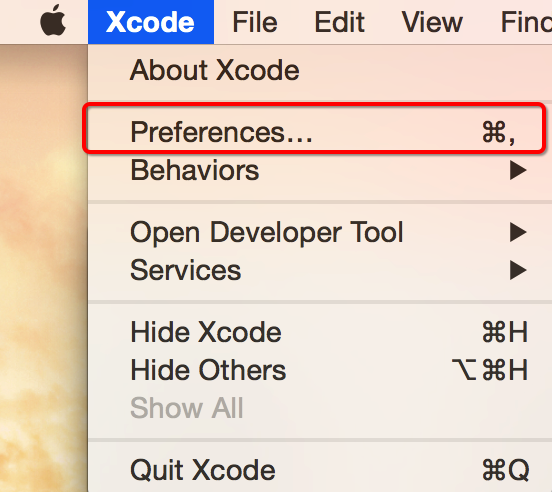
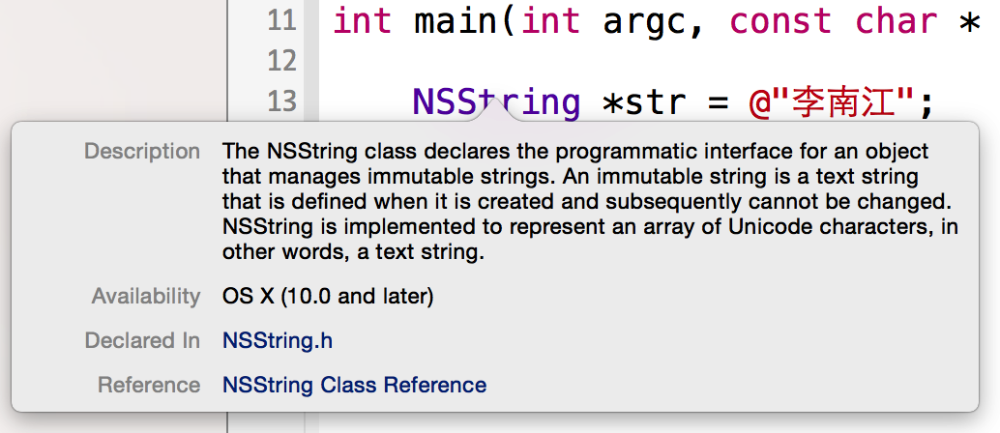
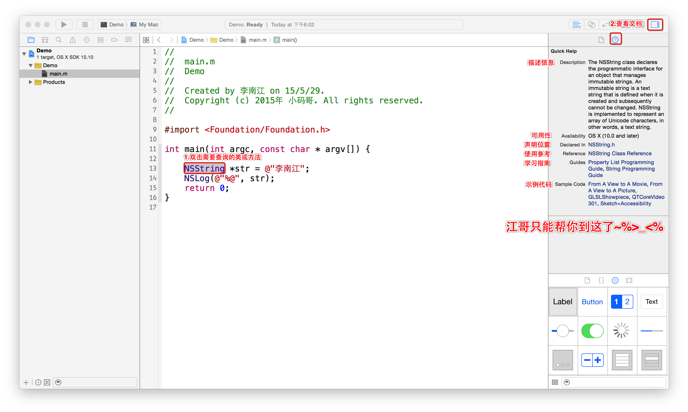

- 简介
- 1. IOS UI
- 2. IOS 编程
-
3.
OC 语法
- 3.1. OC 函数
- 3.2. OC 对象方法的声明和实现
- 3.3. OC 对象的存储细节
- 3.4. OC NSString类介绍及用法
- 3.5. Self关键字
- 3.6. 继承相关特性
- 3.7. Super关键字
- 3.8. 多态的实现
- 3.9. 实例变量修饰符
- 3.10. OC @property参数
- 3.11. OC @class
- 3.12. OC id类型
- 3.13. OC 构造方法
- 3.14. OC 类的启动过程
- 3.15. OC 常见的结构体
- 3.16. OC Foundation框架介绍
- 3.17. OC 字符串比较
- 3.18. OC 字符串读写
- 3.19. OC 字符串截取
- 3.20. OC 字符串搜索
- 3.21. OC 字符串替换
- 3.22. OC 字符串与基本数据类型转换
- 3.23. OC 字符串与路径
- 3.24. OC NSArray基本概念
- 3.25. OC NSArray遍历
- 3.26. OC NSArray排序
- 3.27. OC NSArray文件读写
- 3.28. OC NSArray与字符串
- 3.29. OC NSMutableArray基本概念
- 3.30. OC NSString基本概念
- 3.31. OC NSMutableString练习
- 3.32. OC NSMutableString基本概念
- 3.33. OC NSMutableString常用方法
- 3.34. OC NSDictionary基本概念
- 3.35. OC NSMutableDictionary基本概念
- 3.36. OC NSNumber基本概念
- 3.37. OC NSValue基本概念
- 3.38. OC NSDate基本概念
- 3.39. OC NSFileManager介绍
- 3.40. OC 集合对象的内存管理
- 3.41. OC Copy
- 3.42. OC Copy与内存管理
- 3.43. OC @property中的copy关键字
- 3.44. OC 自定义的类实现copy操作
- 3.45. OC 单例设计模式
- 3.46. OC Protocol基本概念
- 3.47. OC Protocol类型限制
- 3.48. OC Protocol其他用法
- 3.49. OC 代理设计模式
- 3.50. OC Category基本概念
- 3.51. OC Category注意事项
- 3.52. OC 类扩展(匿名分类)
- 3.53. OC Block基本概念
- 3.54. OC Block注意事项
- 3.55. OC Block进阶
- 3.56. OC 类扩展(Typedef和Block)
- 3.57. OC 自定义构造方法
- 3.58. OC 自定义类工厂方法
- 3.59. OC 自定义类工厂方法
- 3.60. OC SEL类型
- 3.61. OC 内存管理
-
4.
IOS Swift
- 4.1. Swift 常量和变量
- 4.2. Swift 中的数据类型
- 4.3. Swift getter和setter
- 4.4. Swift 字符串
- 4.5. Swift 可选类型
- 4.6. Swift 懒加载
- 4.7. Swift 逻辑分支
- 4.8. Swift 数组
- 4.9. Swift 循环
- 4.10. Swift 元祖
- 4.11. Swift 字典
- 4.12. Swift 中类的定义
- 4.13. Swift 函数
- 4.14. Swift 类的构造函数
- 4.15. Swift 闭包
- 4.16. Swift 处理异常的方法
- 4.17. Swift 便利构造函数(相当于分类)
- 4.18. Swift swift类方法
- 4.19. Swift swift时间监听
- 5. IOS Swift微博
- 6. IOS Xcode
- 7. IOS 开发注意
- 8. IOS 面试宝典
- Published using GitBook
Xcode文档安装
本小节知识点:
- Xcode文档在线安装
- Xcode文档离线安装
- Xcode文档基本使用
- 如何阅读文档?
- 离开江哥你还能干什么?
1.Xcode文档在线安装
- 打开Xcode,首选项

- 点击DownLoads下载文档

2.Xcode文档离线安装
- 找到备份的文档
- com.apple.adc.documentation.AppleiOS8.0.iOSLibrary.docset

- com.apple.adc.documentation.AppleiOS8.0.iOSLibrary.docset
找到DocSets目录
- /Applications/Xcode.app/Contents/Developer/Documentation/DocSets
拷贝文件到该目录
退出重新打开Xcode
- 如果还不行，/Users/你的用户名/Library/Developer/Shared/Documentation/DocSets，看是否存在同名的或版本更新的，把它删掉
注意: 如果文件夹中有版本更高的文档不会显示低版本文档
3.Xcode文档基本使用
如何打开文档

文档结构


- 关键字说明
- Getting Started —— 新手入门，一般来说，是给完全的新手看的。建议初学者看看，这里面有一些建立观念的东西，有了这些建立观念的东西，后面的学习就比较容易了。
- Guides —— 指南，指南是Xcode里面最酷最好的部分，学会看指南则大多数情况完全不用买书。Xcode文档里面的指南，就是一个一个问题的，从一个问题，或者系统的一个方面出发，一步一步详细介绍怎么使用Cocoa库的文档。一般程序员比较熟悉的是Reference，就是你查某个类、方法、函数的文档时候，冒出来的东西。那些其实是一点一点的细碎知识，光看那些东西就完全没有脉络。而Guides就是帮你整理好的学习的脉络。
- Reference —— 参考资料。一个一个框架一个一个类组织起来的文档，包含了每个方法的使用方法。
- Release Notes —— 发布说明。一个iOS新版本带来了哪些新特性，这样的信息，熟悉新iOS，比较不同iOS版本API不同，都需要参考这些文档。
- Sample Code —— 示例代码。苹果官方提供的一些示例代码，帮助你学习某些技术某些API。非常强烈建议学习的时候参考，一方面光看文档有时候还是很难弄明白具体实现是怎么回事儿。另外一方面这些示例代码都是苹果的工程师写的，你从示例代码的变迁可以看到苹果官方推荐的代码风格流变。
- Technical Notes —— 技术说明。一些技术主题文章，有空的时候可以浏览一下。往往会有一些收获。
- Technical Q&A —— 常见技术问答。这是技术社区里面一些常见问题以及回答的整理。
- Video —— 视频。目前主要是WWDC的视频，实际上是登录到开发者网站上去浏览的，这里就是快捷方式。想深入学习的话，一定不能错过，大量的看，不仅可以学好技术，还可以练好英文。
- 这里面的Reference、Release Notes、Sample Code、Technical Notes、Technical Q&A，一般来说只是备查的。主要要看的是Getting Started和Guides。
4.如何阅读文档?
快速查询文档
- 按住Option键查询 
- 通过Quick Help查询 
搜索帮助

阅读文档

5.离开江哥你还能干什么?
Start Developing iOS Apps Today
- 马上着手开发 iOS 应用程序, 建立基本iOS开发概览
iOS Technology Overview
- iOS技术概览,阅读这个文档的目的和检测标准是，遇到具体问题，知道应该去看哪方面的文档
iOS Human Interface Guidelines
- iOS 人机交互指南,阅读这个文档的目的和检测标准是，看到任何一个App，你可以知道它的任何一个UI是系统控件，还是自定义控件，它的层次关系等等。
Programming with Objective-C
- 学习OC基础语法,阅读这个文档的目的和检测标准是，看得懂基本的Objective-C代码，方便后面的学习和阅读各种示例代码
App Programming Guide for iOS
- iOS应用程序编程指南,介绍的就是开发一个App的完整流程，包括App的生命周期、休眠、激活等等. 阅读这个文档的目的和检测标准是，了解全部流程和很多细节问题
View Programming Guide for iOS
View Controller Programming Guide for iOS
- 阅读这两个文档的目的和检测标准是，深刻理解什么是View，什么是View Controller，理解什么情况用View，什么情况用View Controller。
Table View Programming Guide for iOS
- 阅读这个文档的目的和检测标准是，深刻理解UITableView／UITableViewController的理论和使用方法